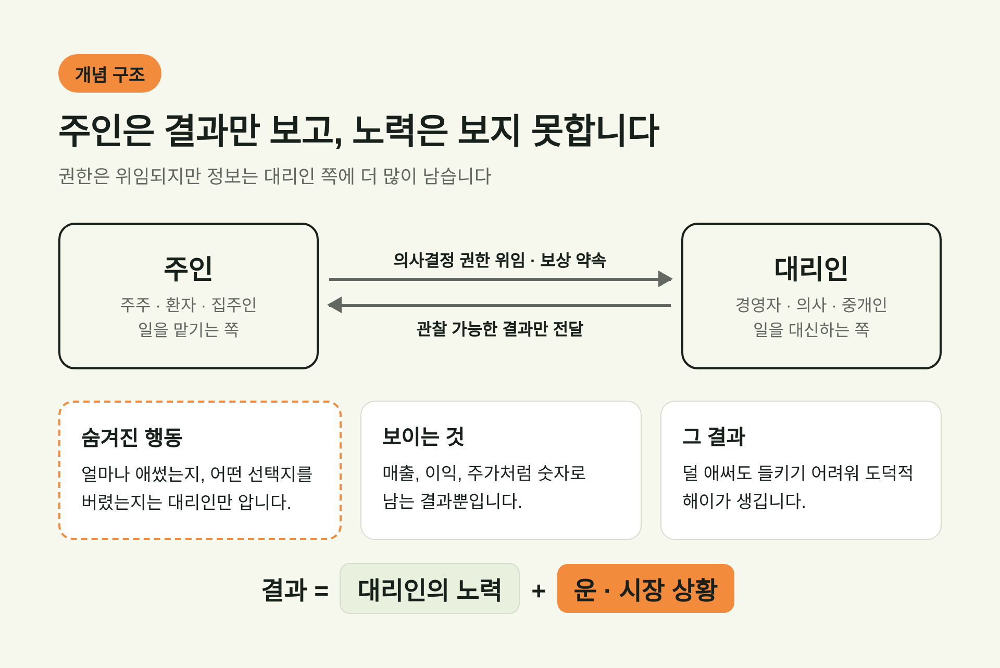
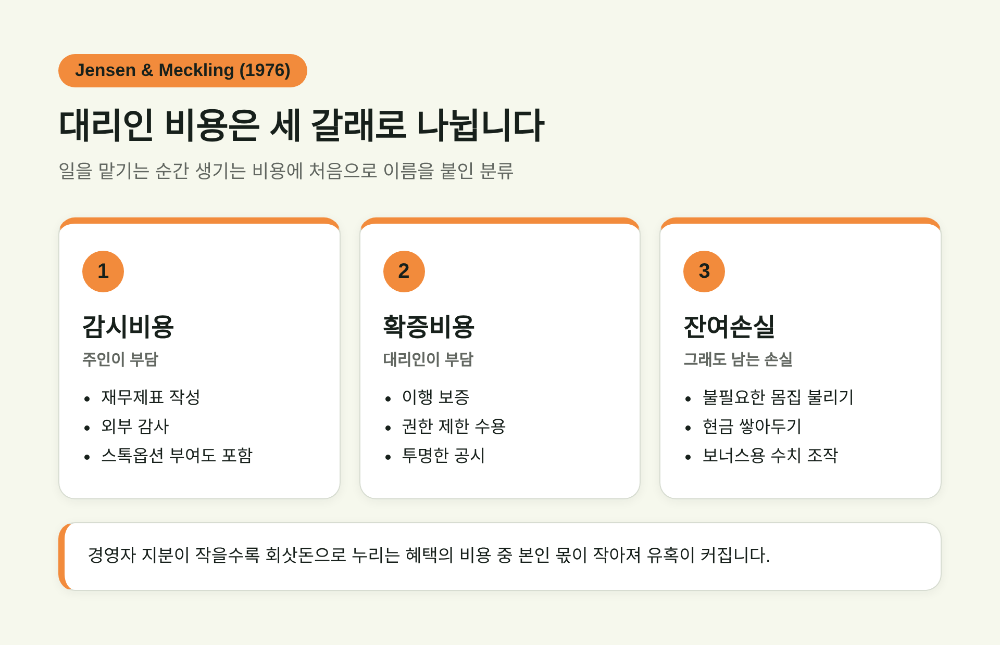
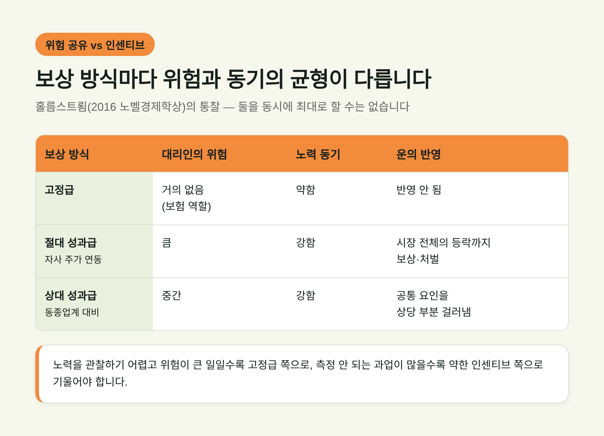
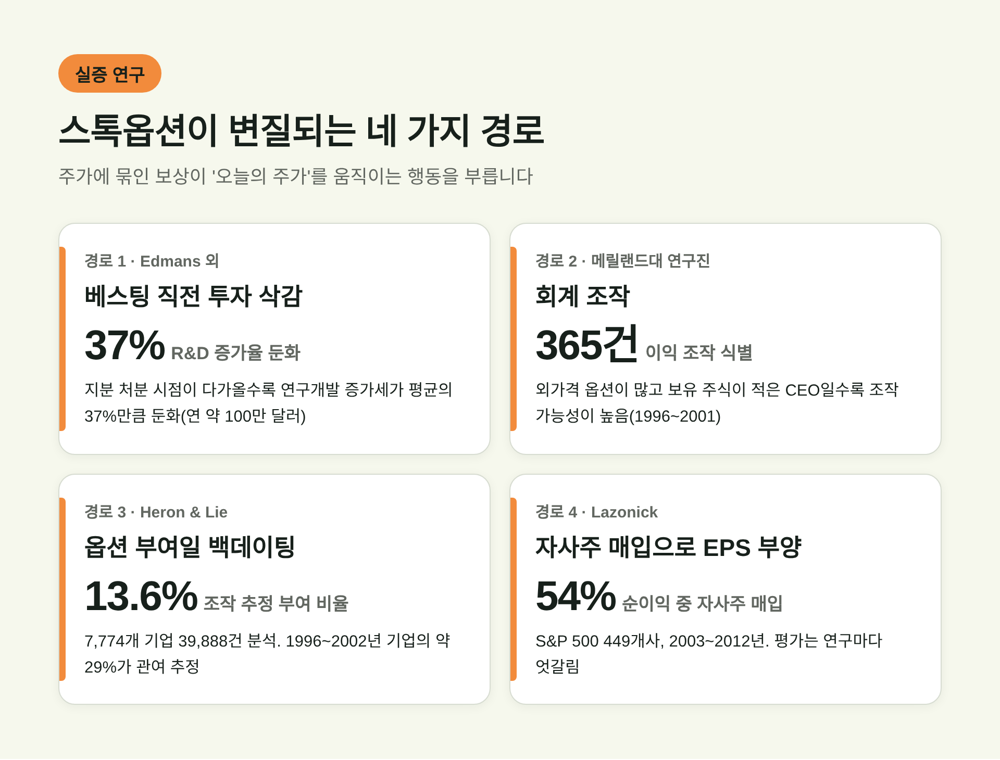
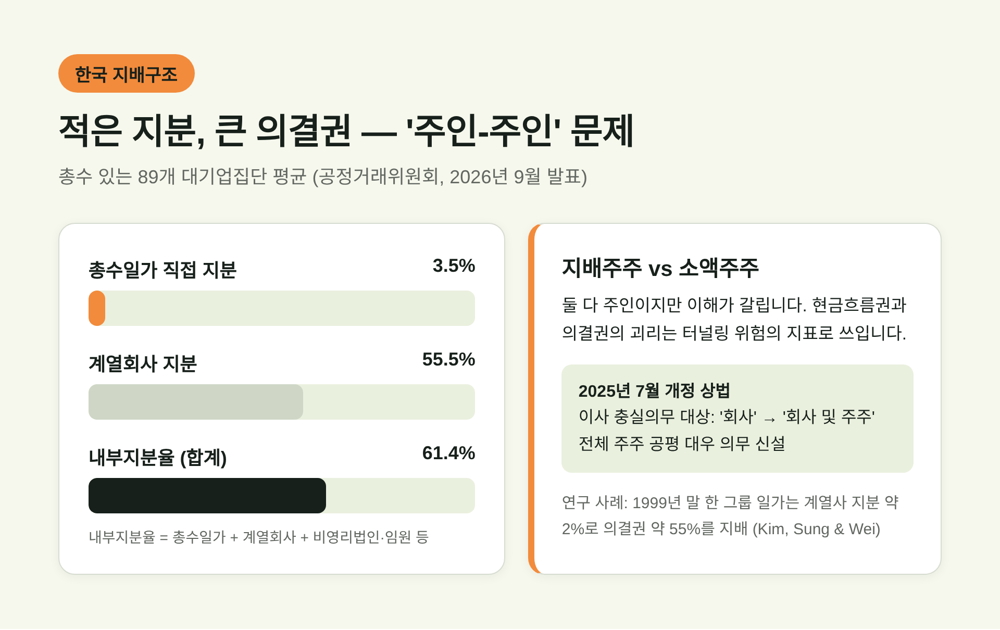
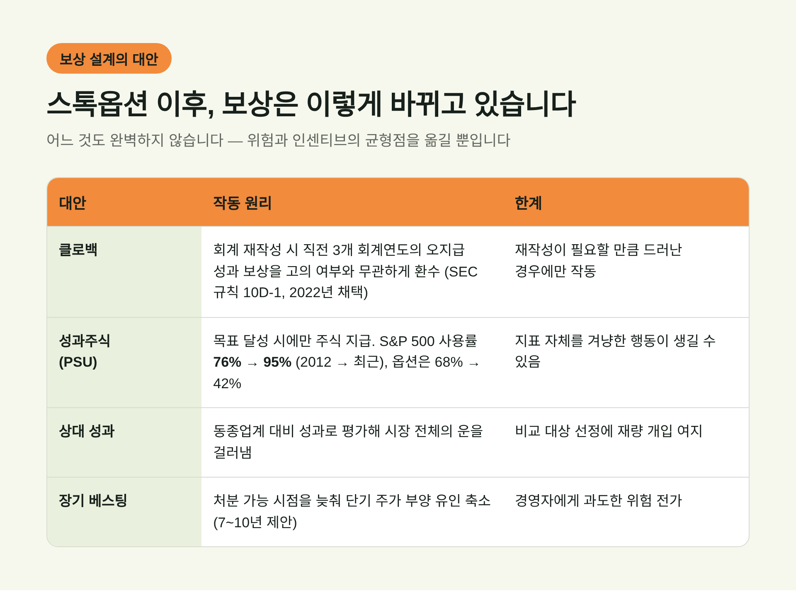

주인-대리인 문제, 스톡옵션이 경영자를 주주 편으로 못 만드는 이유
이번 글에서는 경제학의 오래된 질문인 주인-대리인 문제를 정리해 보겠습니다. 일을 맡긴 사람과 맡은 사람의 이해가 어긋날 때 무슨 일이 생기는지, 그리고 그 틈을 메우려던 스톡옵션이 왜 종종 엉뚱한 결과를 낳았는지 살펴봅니다.
먼저 결론부터 적어 둡니다. 보상을 주가에 묶는다고 경영자가 저절로 주주처럼 생각하지는 않습니다. 보상은 '무엇을, 언제, 얼마나 오래' 측정하느냐에 따라 전혀 다른 행동을 부릅니다.
■ 맡긴 사람은 결과만 봅니다
주인(principal)은 일을 맡기는 쪽입니다. 대리인(agent)은 그 일을 대신하는 쪽입니다. 주주와 경영자, 환자와 의사, 집주인과 중개인이 모두 이 관계에 해당합니다.
문제는 두 가지가 겹칠 때 생깁니다. 하나는 둘의 이해가 다르다는 점입니다. 다른 하나는 대리인이 더 많이 안다는 점입니다. 이 조건에서는 주인이 대리인을 늘 자기 뜻대로 움직이게 할 방법이 없습니다.
경제학은 이를 '숨겨진 행동(hidden action)'이라고 부릅니다. 주인은 대리인이 얼마나 애썼는지 직접 볼 수 없습니다. 보이는 것은 결과뿐입니다. 그런데 결과에는 노력과 운이 섞여 있습니다. 실적이 좋으면 잘해서인지 시장이 좋아서인지 가려내기 어렵습니다.
여기서 도덕적 해이가 끼어듭니다. 노력이 보이지 않으니 덜 애써도 들키지 않습니다. 손실을 대리인이 거의 지지 않는 구조라면 더욱 그렇습니다.

■ 젠슨과 메클링이 매긴 '맡긴 값'
1976년 마이클 젠슨과 윌리엄 메클링은 이 문제에 가격표를 붙였습니다. 논문 「기업 이론: 경영자 행동, 대리인 비용, 소유 구조」에서 대리인 비용을 세 가지로 나눴습니다.
- 감시비용: 주인이 부담합니다. 재무제표 작성, 외부 감사가 대표적입니다. 흥미롭게도 경영진에게 스톡옵션을 주는 것도 여기에 들어갑니다.
- 확증비용: 대리인이 신뢰를 얻으려 스스로 치르는 비용입니다. 이행 보증, 권한 제한 수용, 투명한 공시 같은 것입니다.
- 잔여손실: 감시와 확증을 다 하고도 남는 손실입니다. 회사를 불필요하게 키우는 제국 건설, 쓸 데 없는 현금 쌓아두기, 보너스를 위한 수치 조작이 예로 거론됩니다.
핵심 직관은 단순합니다. 경영자가 가진 지분이 작을수록, 회삿돈으로 누리는 혜택이나 태만의 비용 중 본인이 부담하는 몫도 작아집니다. 그러니 유혹은 커집니다.
이 진단에서 자연스러운 처방이 나왔습니다. 경영자에게 주식을 쥐여 주면 된다는 것입니다.

■ 위험을 덜어주면 인센티브가 약해집니다
그렇다고 보상을 성과에 100% 묶으면 끝일까요. 2016년 노벨경제학상을 받은 벵트 홀름스트룀의 연구가 여기에 답합니다.
대리인은 대개 위험을 싫어합니다. 고용주는 위험을 더 잘 견딥니다. 고정급은 대리인에게 보험 역할을 합니다. 성과급은 동기를 줍니다. 둘을 동시에 최대로 할 수는 없습니다. 위험을 덜어줄수록 인센티브는 약해지고, 인센티브를 세게 걸수록 대리인이 떠안는 위험은 커집니다.
홀름스트룀이 1979년 제시한 '정보성 원칙'은 이 상충을 다루는 출발점입니다. 최적 계약은 대리인의 행동에 관해 정보를 주는 모든 결과에 보상을 연결해야 한다는 원칙입니다. 노벨위원회 해설은 구체적인 예를 듭니다. 경영자 보상을 자사 주가에만 묶으면 운까지 보상하게 됩니다. 비슷한 회사들의 주가와 비교한 '상대 성과'에 묶는 편이 낫다는 것입니다.
같은 해설은 노력을 관찰하기 어려울수록 성과 연동을 줄여야 하며, 위험이 큰 산업일수록 고정급 쪽으로 기울어야 한다고 정리합니다.
또 하나의 함정이 있습니다. 홀름스트룀과 폴 밀그럼의 '멀티태스킹' 문제입니다. 측정하기 쉬운 일에 강한 보상을 걸면 측정하기 어려운 일이 밀려납니다. 교사 보상을 시험 점수에 연동하면, 점수로 잡히지 않는 중요한 역량 교육이 소홀해질 수 있다는 예가 대표적입니다. 경영자로 치면 이번 분기 이익은 잘 측정되지만, 10년 뒤를 위한 연구개발은 잘 측정되지 않습니다.

■ 스톡옵션은 어떻게 변질됐을까
출발점은 1990년입니다. 젠슨과 케빈 머피는 미국 CEO의 재산이 주주 재산 1,000달러가 변할 때 3.25달러밖에 변하지 않는다고 추정했습니다. 가치를 높이는 결정을 끌어내기엔 너무 약하다는 진단이었습니다. 이후 주식 기반 보상, 특히 스톡옵션이 폭발적으로 늘었습니다.
그런데 결과는 기대와 달랐습니다. 젠슨과 머피 자신도 나중에 이렇게 돌아봤습니다. 옵션이 급여와 보너스를 대체하리라 기대했지만, 실제로는 그 위에 얹혀 보상 총액만 부풀렸다는 것입니다. 당시 옵션은 회계상 비용도 현금 지출도 없어 이사회가 거의 공짜처럼 여겼고, 그 결과 너무 많은 사람에게 너무 많은 옵션이 뿌려졌다고 평가했습니다.
변질의 경로는 크게 네 가지로 정리됩니다.
첫째, 베스팅 직전의 투자 삭감입니다. 알렉스 에드먼스 등은 2,047개 기업을 분석했습니다. CEO의 지분이 곧 베스팅(처분 가능 시점 도래)될수록 연구개발 투자 증가율이 평균의 37%만큼 둔화했습니다. 금액으로는 연간 약 100만 달러 수준입니다. 같은 시기 애널리스트 예상치를 1센트 미만 차이로 겨우 넘는 비율도 9.5%에서 12.0%로 높아졌습니다. 다행히 시장은 이런 '아슬아슬한 달성'에 덜 반응했습니다. 의도를 어느 정도 알아본 셈입니다.
둘째, 회계 조작입니다. 메릴랜드대 연구진은 1996~2001년 상장사 2,532곳에서 이익 조작 365건을 찾아냈습니다. 외가격 옵션(행사가가 현재 주가보다 높아 지금은 가치가 없는 옵션)을 많이 들고 있고 실제 주식은 적게 가진 CEO일수록 조작 가능성이 높았습니다. 옵션은 주가가 오르면 크게 벌지만 떨어져도 잃을 것이 제한적입니다. 위험을 감수할 이유가 생기는 구조입니다.
셋째, 옵션 부여일 자체를 조작하는 백데이팅입니다. 2006년 랜들 헤론과 에릭 리는 7,774개 기업의 옵션 부여 39,888건을 분석해, 전체의 13.6%가 날짜가 조작됐다고 추정했습니다. 주가가 가장 낮았던 날로 부여일을 거슬러 올라가면 행사가가 낮아져 그만큼 이득이 커집니다. 1996~2002년 사이에는 기업의 약 29%가 이런 조작에 관여한 것으로 추정됐습니다.
넷째, 자사주 매입입니다. 윌리엄 라조닉은 2003~2012년 S&P 500 기업 449곳이 순이익의 54%를 자사주 매입에, 37%를 배당에 썼다고 집계했습니다. 같은 시기 최고 보수 경영자 500명의 보수 가운데 스톡옵션이 52%, 주식 보상이 26%였습니다. 자사주를 사들이면 주식 수가 줄어 주당순이익(EPS)이 오릅니다. 보상이 EPS나 주가에 묶여 있다면 경영자에게 직접 이득이 됩니다.
다만 자사주 매입을 일방적으로 나쁘게만 볼 일은 아닙니다. 알메이다 등의 연구는 EPS 예상치를 몇 센트 차이로 놓칠 기업이 자사주 매입에 나설 확률이 뚜렷이 높고, 이후 설비투자·연구개발·고용을 줄인다는 점을 확인했습니다. 그러면서도 평균적으로는 주주가치를 해치지 않았다고 결론지었습니다. 관점에 따라 평가가 갈리는 대목입니다.

■ 엔론이 보여준 극단
이 모든 경로가 한꺼번에 터진 사례가 엔론입니다.
엔론 경영진은 보상의 상당 부분을 주식과 옵션으로 받았습니다. 주가는 2000년 중반 약 90달러로 정점을 찍었습니다. 그 사이 장부 밖 파트너십으로 부채를 숨기는 회계가 이어졌습니다. 2001년 10월 주주자본 12억 달러 감액이 발표됐고, 11월에는 1997년부터의 이익을 약 5억 8,600만 달러 낮춰 재작성했습니다. 주가는 1달러 아래로 무너졌고, 12월 2일 파산보호를 신청했습니다.
대비가 선명합니다. CNN이 의뢰한 톰슨파이낸셜 집계에 따르면, 붕괴 전 3년간 엔론 경영진과 이사들은 약 13억 달러어치 주식을 팔았습니다. 케네스 레이 전 CEO가 약 2억 달러, 제프리 스킬링 전 CEO가 약 1억 9천만 달러를 팔았습니다. 반면 4,500명 넘는 직원이 일자리를 잃었고, 퇴직연금에 가입한 2만 4천 명이 최대 10억 달러를 잃었습니다.
스톡옵션이 이해를 일치시킨 것은 맞습니다. 다만 그 일치는 '오늘의 주가'에 대한 것이었습니다. 경영자는 주가가 높을 때 팔고 나갈 수 있었고, 장기 주주와 직원은 그럴 수 없었습니다. 정보를 더 가진 쪽이 더 빨리 빠져나간 셈입니다.
■ 의사, 중개인, 교사의 경우
주인-대리인 문제는 기업만의 이야기가 아닙니다.
부동산 중개가 좋은 예입니다. 스티븐 레빗과 채드 사이버슨은 시카고 교외 주택 거래 약 9만 8천 건을 분석했습니다. 중개인이 자기 집을 팔 때는 비슷한 집보다 약 3.7% 비싸게 팔았고, 시장에 약 열흘 더 내놓았습니다. 이유는 수수료 구조에 있습니다. 매도 측 중개인 몫은 가격의 약 1.5%입니다. 1만 달러를 더 받아도 중개인에게 돌아가는 것은 약 150달러뿐입니다. 남의 집이라면 서둘러 파는 편이 낫고, 자기 집이라면 기다리는 편이 낫습니다.
의료도 마찬가지입니다. 조너선 그루버와 마리아 오잉스는 1970~1982년 미국 출산율이 13.5% 떨어지자 산부인과 의사들의 소득 압박이 커졌고, 보상이 더 높은 제왕절개로 옮겨 갔다는 분석을 내놓았습니다. 환자는 의학 지식에서 의사를 따라갈 수 없습니다. 바로 그 정보 격차가 문제를 만듭니다.
공공부문에서는 앞서 본 멀티태스킹 문제가 두드러집니다. 교사·의료인·교정 공무원처럼 성과를 숫자 하나로 잡기 어려운 일일수록, 강한 성과급이 오히려 일을 왜곡할 수 있습니다.
■ 한국에서는 '주인과 주인'이 부딪힙니다
미국식 주인-대리인 문제는 흩어진 주주와 전문경영인 사이의 문제입니다. 한국의 사정은 조금 다릅니다.
신흥국 지배구조 연구에서는 이를 '주인-주인(principal-principal)' 문제라고 부릅니다. 소유가 집중된 구조에서는 지배주주와 소액주주가 모두 주인인데, 둘의 이해가 갈립니다. 지배주주가 회사 가치보다 자기 몫을 키우는 결정을 내릴 수 있기 때문입니다.
숫자가 구조를 보여줍니다. 공정거래위원회가 2026년 9월 발표한 주식소유현황에 따르면, 총수가 있는 89개 대기업집단에서 총수일가가 직접 가진 지분은 평균 3.5%입니다. 그런데 계열회사 지분 등을 합친 내부지분율은 61.4%에 이릅니다. 적은 현금흐름권으로 큰 의결권을 행사하는 구조입니다.
이 괴리는 '터널링(회사 이익을 지배주주 쪽으로 빼돌리는 것)' 위험의 지표로 쓰입니다. 김우찬 등의 연구는 지배구조가 좋은 나라의 외국인 기관투자자일수록 이런 괴리가 큰 재벌 계열사 주식을 피했고, 특히 1997년 외환위기 이후 그런 경향이 뚜렷해졌다고 분석했습니다. 연구에 실린 사례로, 1999년 말 한 그룹 일가는 계열사 지분 약 2%로 의결권 약 55%를 지배했습니다.
제도도 움직이고 있습니다. 2025년 7월 국회를 통과한 개정 상법은 이사의 충실의무 대상을 '회사'에서 '회사 및 주주'로 넓히고, 전체 주주의 이익을 공평하게 대우할 의무를 새로 넣었습니다. 예전엔 이사가 회사만 바라보면 됐습니다. 이제는 소액주주도 법이 명시한 보호 대상입니다. 실제 판례와 기업 행동이 어떻게 달라질지는 좀 더 지켜봐야 합니다.

■ 그래서 보상은 어떻게 바뀌고 있나
스톡옵션의 부작용이 드러나면서 보상 설계도 달라졌습니다.
클로백(환수): 미국 증권거래위원회(SEC)는 2022년 10월 규칙 10D-1을 채택했습니다. 회계 재작성이 필요해지면 직전 3개 회계연도에 잘못 지급된 성과 보상을 돌려받아야 합니다. 경영자의 고의나 책임 여부와 상관없이 적용되는 것이 특징입니다.
성과주식(PSU): 정해진 성과 목표를 달성해야 주식을 주는 방식입니다. S&P 500에서 스톡옵션을 쓰는 기업은 2012년 68%에서 최근 42%로 줄었습니다. 반대로 성과주식을 쓰는 기업은 76%에서 95%로 늘었고, 장기 보상의 평균 60%를 차지합니다. 상대 성과(동종업계 대비 주주수익률)를 지표로 쓰면 홀름스트룀이 말한 '운'을 걸러낼 수도 있습니다.
국내에서도 비슷한 흐름이 보입니다. 삼성전자는 2025년 10월 임직원 대상 성과연동 주식보상을 도입했습니다. 3년 뒤 주가 상승률이 20% 미만이면 지급하지 않고, 100% 이상이면 약정 수량의 2배를 줍니다. 지급도 2028년부터 3년에 걸쳐 나눠 이뤄집니다.
장기 보유: 에드먼스 등은 베스팅 기간을 7~10년으로 늘리자고 제안합니다. 경영자가 주식을 팔 수 있는 시점을 멀리 둘수록 단기 주가를 띄울 유인은 줄어듭니다.
물론 어느 것도 완벽하지는 않습니다. 성과주식도 지표 자체를 겨냥한 행동을 부를 수 있고, 지나치게 긴 베스팅은 경영자에게 과한 위험을 지웁니다. 위험과 인센티브 사이의 상충은 설계를 바꿔도 사라지지 않습니다. 균형점을 옮길 뿐입니다.

정리하면 이렇습니다. 주인-대리인 문제는 정보의 비대칭에서 시작되고, 보상은 그 틈을 메우는 도구입니다. 하지만 도구는 측정하는 것만 키웁니다. 스톡옵션은 주가를 측정했고, 경영자는 주가를 움직였습니다. 회사의 장기 가치는 그 뒤로 밀렸습니다.
"사람은 보상받는 대로 움직이지, 기대받는 대로 움직이지 않는다."
이 문장을 경영자 보상에만 적용할 필요는 없습니다. 병원 진료비 체계, 중개 수수료, 교사 평가에도 같은 질문을 던질 수 있습니다. 지금 우리가 맡긴 일의 보상은 정말 우리가 원하는 행동을 가리키고 있느냐고 묻는다면, 선뜻 그렇다고 답하기는 어려울 것입니다.
참고자료
- Jensen & Meckling (1976), Theory of the Firm: Managerial Behavior, Agency Costs and Ownership Structure — https://state-owned-enterprises.worldbank.org/sites/default/files/reports/Theory%20of%20the%20Firm-%20Managerial%20Behavior%2C%20Agency%20Costs%20and%20Ownership%20Structure.pdf
- Wikipedia, Agency cost — https://en.wikipedia.org/wiki/Agency_cost
- NobelPrize.org, The Prize in Economic Sciences 2016 Popular information — https://nobelprize.org/prizes/economic-sciences/2016/popular-information
- Jensen & Murphy (1990), Performance Pay and Top-Management Incentives (RePEc) — https://ideas.repec.org/a/ucp/jpolec/v98y1990i2p225-64.html
- ProMarket, Mike Jensen on CEO Pay (2024) — https://www.promarket.org/2024/05/04/mike-jensen-on-ceo-pay/
- Bolton, Scheinkman & Xiong, Executive Compensation and Short-termist Behavior in Speculative Markets (NBER) — https://www.nber.org/papers/w9722
- Bebchuk & Fried, Pay Without Performance (SSRN) — https://papers.ssrn.com/abstract=537783
- Bertrand & Mullainathan, Do CEOs Set Their Own Pay? (NBER) — https://www.nber.org/papers/w7604
- Edmans, Fang & Lewellen, Equity Vesting and Managerial Myopia (NBER) — https://www.nber.org/papers/w19407.pdf
- Knowledge at Wharton, Managerial Myopia — https://knowledge.wharton.upenn.edu/article/managerial-myopia-ceos-pump-earnings-gain/
- UMD Smith School, CEOs on the Edge (2008) — https://www.rhsmith.umd.edu/news/ceos-edge-earnings-manipulation-and-stock-based-incentive-misalignment
- The D&O Diary, New Options Backdating Study Implicates Thousands of Companies (2006) — https://www.dandodiary.com/2006/07/articles/options-backdating/new-options-backdating-study-implicates-thousands-of-companies/
- Lazonick, Profits Without Prosperity (INET) — https://ineteconomics.org/ideas-papers/research-papers/profits-without-prosperity-how-stock-buybacks-manipulate-the-market-and-leave-most-americans-worse-off
- Harvard Law School Forum, The Real Effects of Share Repurchases (2016) — https://corpgov.law.harvard.edu/2016/02/08/the-real-effects-of-share-repurchases
- CNN Money, Enron execs sold $1.3B in stock (2002) — https://money.cnn.com/2002/01/22/companies/enron_stocks/index.htm
- CBS News, Enron By The Numbers — https://www.cbsnews.com/news/enron-by-the-numbers
- Britannica, Enron scandal: Downfall and bankruptcy — https://www.britannica.com/event/Enron-scandal/Downfall-and-bankruptcy
- AP via NewsOn6, Enron restates earnings (2001) — https://www.newson6.com/story/5e3680f82f69d76f62095252/white
- Harvard Law School Forum, SEC Releases Final Rules Regarding Clawback Policies (2022) — https://corpgov.law.harvard.edu/2022/11/19/sec-releases-final-rules-regarding-clawback-policies-for-public-issuers
- Harvard Law School Forum, Pulse on Pay: 12 Years of CEO Pay (2025) — https://corpgov.law.harvard.edu/2025/06/11/pulse-on-pay-12-years-of-ceo-pay-long-term-trends-in-sp-500-executive-compensation/
- NBER Digest, Do Real Estate Agents Exploit their Information Advantage? — https://www.nber.org/digest/mar05/do-real-estate-agents-exploit-their-information-advantage
- Gruber & Owings, Physician Financial Incentives and Cesarean Section Delivery (NBER) — https://www.nber.org/papers/w4933
- Young et al. (2008), Corporate Governance in Emerging Economies: A Review of the Principal–Principal Perspective — https://econpapers.repec.org/RePEc:bla:jomstd:v:45:y:2008:i:1:p:196-220
- Kim, Sung & Wei, How Does Corporate Governance Risk at Home Affect Investment Choices Abroad? (NBER) — https://www.nber.org/system/files/working_papers/w13721/w13721.pdf
- 뉴데일리, 공정위 89개 대기업 주식소유현황 분석 (2026.9.3) — https://biz.newdaily.co.kr/site/data/html/2026/09/03/2026090300359.html
- 법률신문, 상법개정① 이사의 주주충실의무 도입 — https://www.lawtimes.co.kr/news/articleView.html?idxno=209502
- 뉴시스, 삼성전자 성과연동 주식보상 (2025.10.14) — https://mobile.newsis.com/view/NISX20251014_0003361800